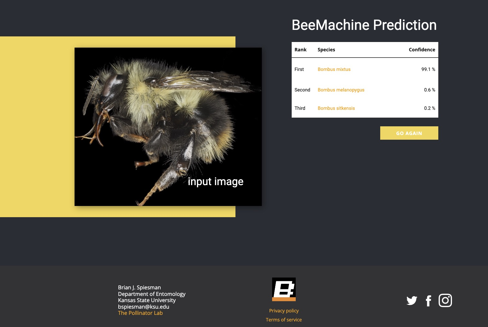
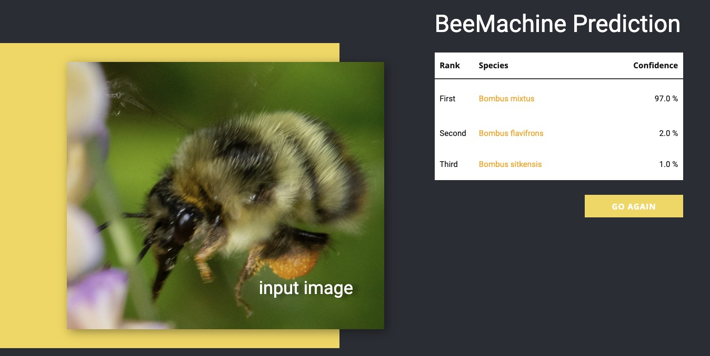
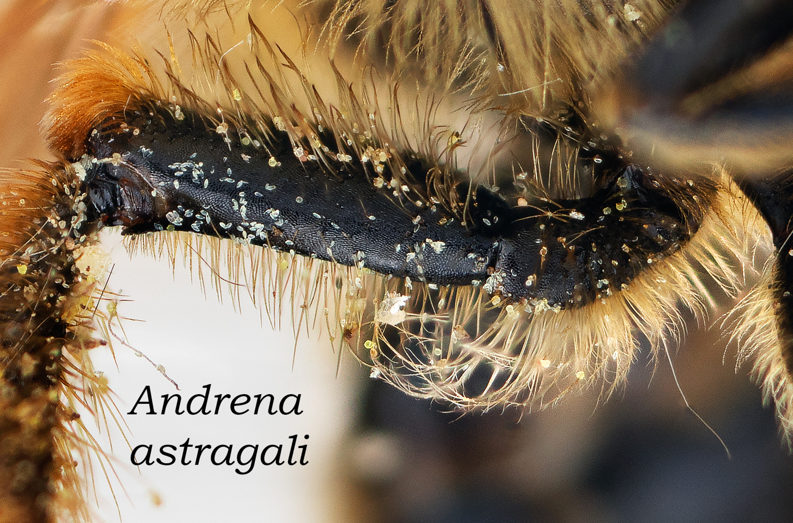
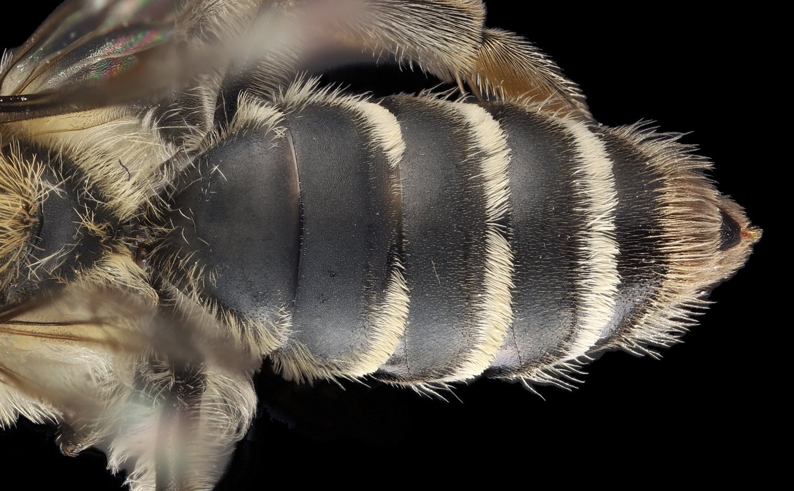
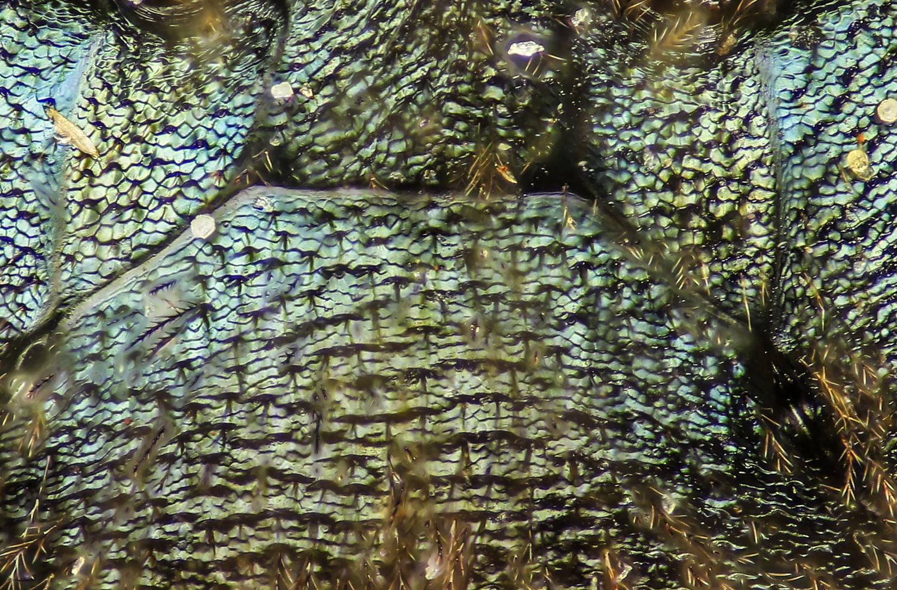
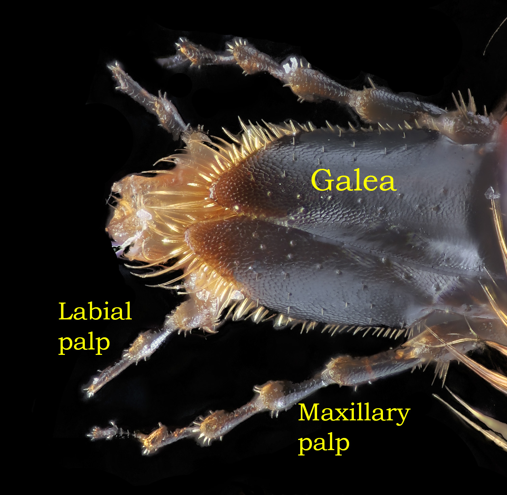
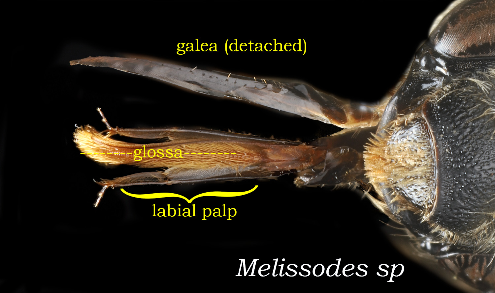
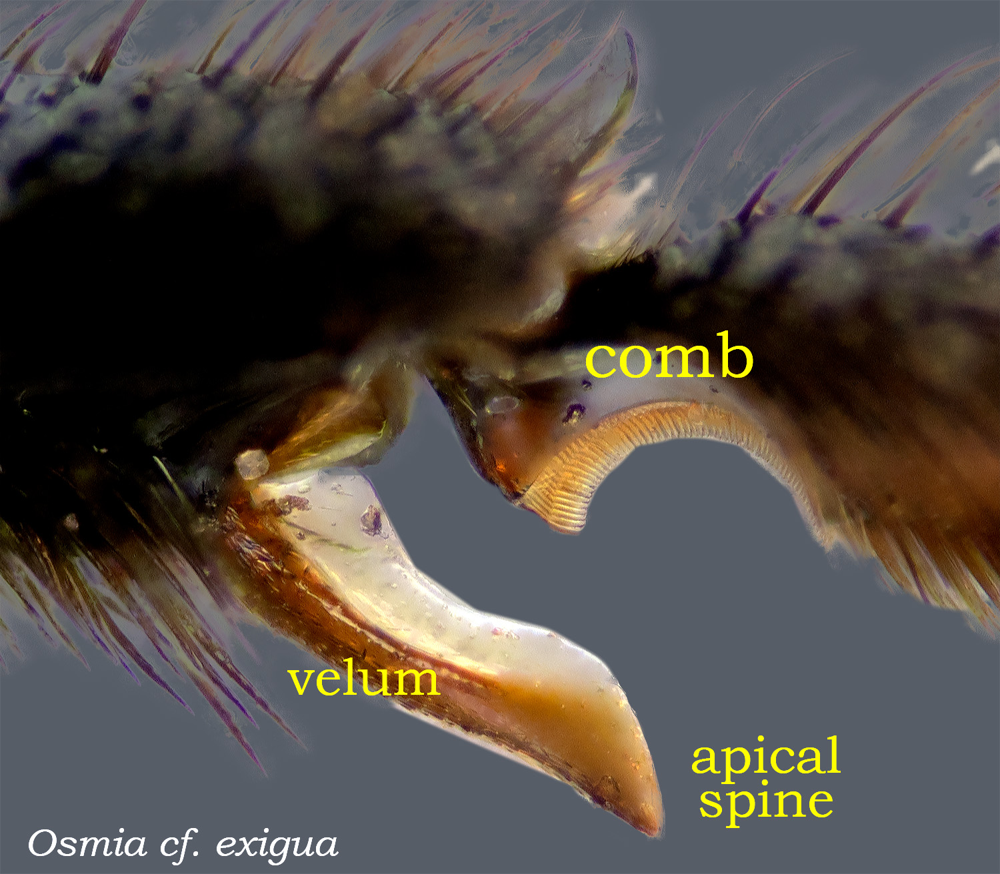
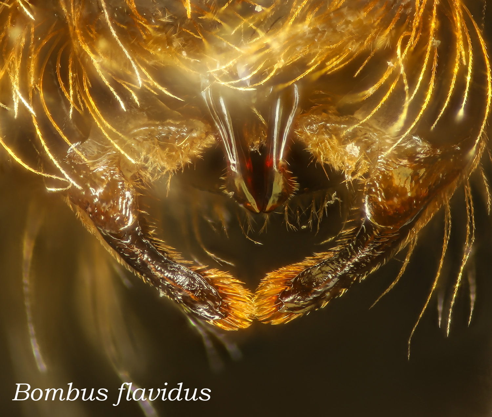

Perhaps the ideal way to identify bees is to hand off your specimens to a trained specialist, someone fluent in the complicated vocabulary of taxonomy. However, there are nowhere near enough experts available, so most of us will have to work through keys and puzzle over tricky characters to arrive at an ID. With this resource, the aim is to at least de-mystify the terminology. Also: note that vocabulary and observation are linked: if you know half a dozen terms describing surface sculpture, you will begin to see the details that distinguish them. Then, when you write your own taxonomic resources, you will provide more precise guidance to your own audience.
This glossary covers most of what you will encounter in typical keys. The universe of all technical terms is much larger. For these consider two other resources free on the internet: The Bees of the World, by Michener is a comprehensive treatment of morphology, biology, identification of ... bees of the world. The Hymenoptera Anatomy Ontology Portal has definitions for thousands of terms, though many relate to non-bee taxa.
Author: David Cappaert, Quamash EcoResearch. Images by David Cappaert, unless otherwise credited. Thanks to Laurence Packer, whose photos cover many taxa beyond those I know. Collaborators: Clare Maffei, USGS/FWS Native Bee Lab; Initial idea: Codey Mathis of Penn State. Detailed edits: Lisa Robinson, Washington Native Bee Society. Feedback: cappaert@comcast.net.
For insects in general, the third, posterior body region. For bees, wasps, and ants, there is a wrinkle: the apparent abdomen is properly called the metasoma, because the first abdominal segment is actually integral to the second body region, the mesosoma, or apparent thorax. Taxonomic literature typically uses the technical term: metasoma. DiscoverLife prefers the less precise but more commonly understood term: abdomen. In either scheme, tergae are numbered as shown in the image at right.
Metasoma and numbered tergae in yellow. For abdominal segments, the count would start at the posterior of the mesosoma, in red. This specimen is female; there would be 7 visible segments in a male.
abscissa
Not a specific vein, but a description of a segment of a wing vein that is delimited by the intersection of other veins. E.g., if Main Street were a vein, one abscissa would be the stretch between 1st and 2nd.
acarinarial fan
Acarinarial fan refers to the divergent pattern of appressed hairs on the anterior face of the first tergum of some Lasioglossum. This in contrast to erect hairs that may also be present.
View of anterior face of the first abdominal tergite of Lasioglossum (dialictus).
acarinarium
A specialized anatomical structure which is evolved to facilitate the retention of mites on the body of an organism (Wikipedia). In bees, these stuctures may be internal or external, on either the abdomen or thorax.
Mites associated with acarinarium of Lasioglossum titusi.
Image from the Wikipedia page, which also discusses the host/mite relationship. In some cases, the entire anterior portion of the metasoma is hollowed out into an enormous internal chamber, entered through a small opening on the face of the first metasomal tergite, in which the mites can travel.
adventitious vein
A wing vein that is not homologized (i.e., not of common evolutionary origin) with a standard wing vein.
aedeagus
The reproductive organ of male insects. The aedeagus is specifically the intromittent part of the phallic apparatus since it contains the terminus of the genital exit tract (Snodgrass 1941). See genitalia.
A paired, segmented sensory structure receptive to smell, touch, vibration, temperature and humidity. Antennae of bees are comprised of 1) the long first segment, the scape; 2) the second segment, the pedicel; 3) the flagellar segments, 10 for females and 11 for males. Like with any other trait, there will be exceptions; Trigona carbionaria have 3 fewer segments for each sex.
Situated near or towards the head. Overview of orientation terms here. Possibly confusing: the legs of bees may be oriented with the anterior side facing downward. Imagine the specimen standing on its toes, as in image at right.
In this view the anterior sides of the legs are in fact facing forward. Andrena anisochlora male.
apex / apical
Towards the end of a structure. A common usage: apical hair bands differentiate Halictus from the otherwise similar Lasioglossum, that have basal hair bands. Overview of orientation terms here.
apodeme
Internal sclerite that serves as an attachment site for muscles. These may be formed from infoldings of the exoskeleton, externally visible as a pit or sulcus (groove).
appressed (hairs)
Hairs that lie flat to the integumental surface. Appressed hairs are often tomentose.
A pad between the tarsal claws, present in most, but not all species. Among the megachilidae, the absence of an arolium is diagnostic of genus Megachile.
Sclerites on either side of the postero-lateral margin of the scutum. In most genera, these are functionally a portion of the scutellum, but are of scutal origin. In the parasitic genera, Coelioxys, Dioxys, and Triepeolus, the axillae are produced posteriorly as distinct spines, or teeth.
Part of a structure nearest to its point of attachment to the body. E.g., the anterior edges of tergites. E.g., the mandibular teeth closest to the clypeus. Overview of orientation terms here.
Basal hairbands distinguish Lasioglossum from Halictus. In the magnified image, note the blue pollen grains of Gilia.
Same feature. Abdominal hairbands are clearly beneath the apical edge of the previous segment.
basal vein
Forewing vein separating the radial and medial cells. For most taxa, the basal vein is straight (-ish) or gently curved. For Lasioglossum, and Halictidae in general, the vein is arcuate (arched).
Left: Lasioglossum: arcuate basal vein arising from the origin at a right angle (inset). Right: Hylaeus: curved but connection is less than a right angle.
basitarsus
The first and longest of 5 segments comprising the tarsus. The final segment is the distitarsus; the segments in between are the mediotarsi.
Another Megachile, another interesting architecture.
BeeMachine
BeeMachine is an AI tool for identifying bees, developed by Brian Spiesman at Kansas State University. Humans, especially users of this glossary, will make IDs by carefully considering a series of known traits. An AI will make IDs based on a "gestalt" gleaned from thousands of training images. We are a long way from a robust tool that will ID most of the 20,000 bee species. But BeeMachine uses Bombus as a proof-of-concept taxon. Given a photo, it will provide a match to one of 132 species. Anyone can visit the www site to upload an image for ID.

An accurate ID of a prepared specimen

An accurate ID from a field photo.
Sep 2024: entry from the upgrade of the beemachine www site, which includes images, range maps, and brief info on many species.
bidentate
Having two teeth or two projections suggestive of teeth. Describing mandibles, "bidentate" would contrast to a one or three tooth condition. Bidentate can also be used in contrast to emarginate, a condition where the teeth are incompletely separated by a medial indentation--see examples for the labral process of Andrena..
The sclerite that articulates basally with the head, attached distally to the stipes. The cardines (plural) extend the mouthparts forward; see this in the video (Paleontological Research Institute) To see its place in relation to other mouthparts, see tongue.
Among Lasioglossum, the carinae of the propodeum are important traits that differentiate subgenera and species. A lateral carina wholly or partially separates the vertical posterior face of the propodeum from the sides. When present, the oblique (or posterior) carina extends medially across the dorsolateral slope of the propodeal enclosure.
The atypical clypeus of the colletid Geodiscelis longiceps Packer. Photo from Laurence Packer. Lab www site.
colors
In taxonomic treatments, the color of hairs, integument, and maculations is often described with a somewhat cryptic technical vocabulary. The terms (e.g., ferrugineous) do not have precise definitions; rather, their meaning varies by taxon and taxonomist. The photo suggests roughly how some technical terms compare; see other glossary entries for specifics on each term.
A rainbow Anthophora, approximating the color range for technical terms.
Color examples, and an excuse to display a set of beautiful postal stamps featuring native bees. "Royal Mail commissioned research, which found that although 87% of respondents thought bees were important 53% could not name one type of bee." ((Design Week)
The ridge that runs from the lower basal attachment of the mandible, to the apex.
corbicula
A concave surface bounded by hairs, which functions to hold collected pollen. Most often referring to the structure on the hind tibia of apine bees; also called the "pollen basket." Corbicula can also refer to similar structures on the thorax of Andrena.
Above: pollen load on the hind tibial corbicula of a honeybee. Below: corbicula of Bombus impatiens.
Bare corbicula of Bombus. Photo from Laurence Packer. Lab www site.
Andrena laden with pollen, carried both on tibial scopae and propodeal corbiculae.
coriaceous / coriarious
Leathery. Among bees, usually in reference to surface texture. Of course the texture of leather is not one thing, but depends on the source material and tanning process. As applied to bees, "finely reticulate" might be a rough synonym.
Our best approximation of standard for coriaceous.
Coriaceous integument of Lasioglossum tergum.
costal vein
The costal cell lies on the upper edge of the forewing, proximal to the stigma - see wing. To our knowledge it is rarely significant in diagnosis.
coxa
The basal segment of the leg, it is perhaps better understood as the ventral attachment point for the articulating leg segments. The coxa is usually very difficult to see on a mounted specimen.
A ridge or crest. The definition overlaps with that for carina. A crista is usually a single feature - a series of ridges might be striate, rugose, or carinulate.
Andrena may exhibit a median crista on the labrum. This is typically obscured by hairs (left image).
cuckoo bees
Also termed kleptoparasites, cuckoo bees rob the nests of other bee species. Wikipedia: Cuckoo bees enter the nests of pollen-collecting species, and lay their eggs in cells provisioned by the host bee. When the cuckoo bee larva hatches it consumes the host larva's pollen ball, and, if the female kleptoparasite has not already done so, kills and eats the host larva. Kleptoparasitic species appear among Apidae, Halictidae, Megachilidae, and other bee families. In each case, females lack the pollen collecting structures typical of the taxon.
Cuckoo Megachilidae: Coelioxys sp.
Cuckoo Apidae: Triepeolus
Cuckoo Halictidae: Sphecodes sp.
Bombus includes typical pollen collecting species, and cuckoos. B. ashtoni above is a cuckoo. Clue: no corbicula on hind leg.
Photo from Laurence Packer. Lab www site.
cuneate
Wedge-shaped; narrowly triangular, wider at the apex and tapering toward the base.
Describes a crossing (due to the shape of the Roman numeral for ten, an uppercase 'X'). For bees, a term that describes mandibles that extend past each other.
Ask your dentist for a few of these specimen cleaning tools. Charm your dentist by explaining: "I need them to comb my bees..."
depressed (area)
Where bees go when they just don't care anymore. Also, the apical (posterior) portion of a tergum, depressed relative to the anterior portion. AKA apircalimpressed area, mardinal zone.
The relative length of the T2 depressed area (bracket above) is a diagnostic character for Andrena and Lasioglossum.
In this Anthidium, the elevation change is less clear; however there is a distinct transition to the apical "depressed" area where the punctation is small and crowded.
Describing a margin, such as the edge of an eye or sclerite, where the outline includes a concave section as if a part of the region had been "cut out" or displaced. (Wikipedia).
With reference to bees, episternum generally refers to the mesepisternum. The episternal groove (when present) runs vertically on the anterior side of the mesepisternum, posterior to the omalus. The groove position varies by taxon.
The curiously modified (and useful) metafemora of select Ceratina males.
ferrugineus
Color terms in taxonomic works are problematic, as their meanings vary by taxon and taxonomist. One place to start, for ferrugineus, is the Grammatical Dictionary of Botanical Latin which offers: the color of iron-rust, dark-red, rusty, light brown with a little mixture of red.
Reviewing the use of this term for bees suggests that tawny or rust are close. Either of those terms is more precise than "ferrugineous." Other better, more descriptive, everyday words that could be used: copper, brick-red, burgundy, chestnut, auburn, chestnut.
A fancy word for fringe. A desciptor for the dense band of hairs at the apices of tergae 5 and 6 (T5, T6), the prepygidial and pygidial fimbria. The hairs on the apical edge of a tergite might also be termed fimbriae.
Fimbria apical to T5 and T6, dorsal view. Fig. 19, Michener 1994)
Fimbria associated with the labral process of Agapostemon splendens.
flagellum / flagellomere
The flagellum is the third segment of a bee antenna, distal to the scape and pedicel. The subdivisions (typically numbering 10 for females and 11 for males) are flagellomeres, though it is common to refer to these as segments. Referenced in keys, the flagellomeres are given numbers: F1, F2 being the first and second.
The trochanteral flocculus is an accessory pollen collecting structure of the hind trochanter of Andrena.
Long, curled hairs on trochanter--a complete flocculus.

Shorter, straighter hairs on trochanter--an incomplete flocculus.
focus-stacking
Most of the macro images in the glossary are focus-stacked. The technique is a way around the problem of very limited depth of field in highly magnified images. A camera is mounted on a rail that moves it progressively closer to the subject, in increments of as little as 15 microns (at 10X). Each forward step of the camera captures a sharp image at one distance. The set of 20-50 resulting images are then combined in software to make a final image in focus across the depth of the subject.
First image in the stack. The wing and hind leg are in focus.
Last image in the stack. Hairs of the scutum and metasoma are in focus.
Final, stacked image.
fovea / foveate
Generally, a pit or depression in a structure. Most commonly referring to the facial fovea, distinct depressions in the integument medial to the eye. In Andrena these are covered with short appressed hairs (Details for Andrena. In other andrenids, Colletes, and Hylaeus the fovea are bare.
Frons of Andrena walleyi, marked by "coarse longitudinal rugulae and fine shagreening." (DiscoverLife page)
fulvous
Color term described by the Grammatical Dictionary of Botanical Latin as: tawny, 'dull yellow with a mixture of gray and brown' (Lindley), yellowish-brown (Stearn), dull yellowish-brown (S&D), lion-colored; 'deep yellow, reddish yellow, gold-colored, tawny;' (fungi) “reddish-cinnamon-brown; also tawny, reddish-yellow ; the color of lions; “tawny; dull yellow-brown” (Magill 1990).
Reviewing the use of this term for bees suggests that tawny or dull orange are close. Either of those terms is more precise than "fulvous." Other better, more descriptive, everyday words that could be used: amber, buff, golden-brown, caramel, apricot, and of course, "color of lions."
fuscous
Color term described by the Grammatical Dictionary of Botanical Latin as: fuscous, a somber brown, "'brown tinged with greyish or blackish' (Lindley); “dusky [i.e. dark], too brown for a gray; the word is akin to furvus” (Jackson); grayish-brown (Fernald 1950); 'very dark blackish brown' (Dade), but often used to indicate darkness of color" (Stearn); classically 'dark-colored, dark, black, swarthy, dusky, tawny.
A reasonable guess is that fuscous is used comparitively. E.g., "black to fuscous pubescence" meaning that some hairs are browner than jet-black. There are probably better, more descriptive, everyday words that could be used. E.g., cocoa, walnut, chestnut, coffee, burnt sienna.
The width and shape of the gena are common as diagnostic traits.
Megachile pugnata is distinctive for the posteroventral "genal tooth" BIRL/USGS
genitalia
The genitalia are complex, with dozens of terms for constituent parts that differ radically in appearance for different taxa. The topic is not represented in this glossary because 1) traits of the genitalia are so difficult to see and interpret that most non-experts ignore them; 2) the non-expert author of this resource does not yet understand the topic.
Genitalia of a bee I could not identify. Mike Arduser, a true expert, named the genus from just this image.
glabrous
Bald, hairless, smooth, without hairs or sculpture. Also described as "polished." In image at right, the reflective surfaces are glabrous.
glossa
The terminal section of the “tongue” of a bee, usually the longest structure in the middle of all other “tongue-looking” mouthparts (Identification of Bees in Southwest Idaho). The length of the glossa (and associated mouthparts) determines the range of flowers on which a bee can forage. Bees are referred to as short or long tongued; these categories are defined by the structure of the labial palps, and do not strictly correlate with the actual tongue length.
A particularly elaborate glossa of a short-tongued bee. Photo from Laurence Packer. Lab www site.
Bombus consobrinus male. Image from Artsdatabanke. The page for this species includes a video of this bee foraging.
Orchid bee. Photo by João Vitor Oliveira de Souz from Encyclopedia of Life.
gradulus
A transverse line on metasomal tergae and sterna of some bees that is formed by a groove or a step between two regions that differ in height. This line can be well developed and present across the entire segment but can also be diminished or absent through part of the segment, requiring close inspection. (Exotic Bee ID)
gynandromorph
A bee (or other taxon) that is a hermaphrodite, frequently showing a bilateral division between male and female traits.
Lasioglossum hitchensi. The antenna on the left is female, with 12 segments. On the right, a 13-segmented male antenna. BIRL/USGS
Agapostemon. Half of the clypeus (the front plate of the head) is male, half female (bilaterally) similarly one mandible is male and one female. The male has 6 tergites like the female, but the coloration is mostly male, which is brownish, but, interestingly there are some spots on the abdomen that are metallic green which is female. BIRL/USGS
Bands of hair across the the metasomal tergae. In relation to each tergum, these may be basal or apical.

Apical hair bands of Andrena. For various species, these may be complete, partial, or absent.
Basal hair bands of Lasioglossum.
hamuli
Hook-like setae on the anterior margin of the hind wing which interlock with the recurved posterior edge of the fore wing in the Hymenoptera during flight, making them functionally two winged (source). These are perfectly effective for bees, but fail entirely when attempting to position the wings when mounting on a pin.
head dimensions
Head dimensions--length/width--are important in many keys and species diagnoses. Width is taken as the maximum distance across the eyes. Length (height) is typically measured from the top of the head (vertex) to the bottom of the clypeus. An alternative measure of height runs from the median ocellus to the bottom of the clypeus; this has been termed "face length." Face length will of course yield a smaller number for the length/width ratio, so it is critical to know when that metric is used.
By the conventional measure of head dimensions, the ratio for this Andrena is 0.86.
Additional metrics. Modified from Fig. 10-3, Bees of the World.
hyaline
A fancy word for clear, colorless, transparent.
The hyaline wing of Colletes hyalinus. Photo from Laurence Packer. Lab www site.
Hyaline apical margins of T2 and T3, Lasioglossum hyalinum.
humeral angle
The curve of the posterior pronotal edge, akin to shoulder when viewed from in front. The term has another meaning for Lepidoptera. This is a bee glossary.
Humeral angle absent.
Humeral angle present.
Humeral angle distinct.
hypostomal (area)
The underside of the head,
lateral to the hypostomal carina and behind the mandibular base, is the hypostomal area, or, according to Eickwort (1969b), the postgena (Bees of the World).
Posterior view of head, Lasioglossum.
hypostomal carina
The ridge on the back of the head along the oral cavity that normally delimits the hypostoma from the gena and occiput. (Hymenoptera of the World).
Overlapping in sequence, as tiles or shingles on a roof; resembling overlapping tiles, as decoration or drawings (Dictionary.com). In a google search, one finds many scutums and metasomas described as imbricate. I strongly suspect that imbricate is used as a synonym for tesselate.
Posterior face of Lasioglossum propodeum.

Imbricate particularly in upper corners. Andrena
impunctate
Without punctation (pits). This might commonly describe a contrast between a smooth area in an otherwise pitted (punctate) region.
For the second tergite of Osmia, the width of the apical impuncate band is a diagnostic trait.
Median impunctate band, Andrena clypeus.
Lasioglossum titusi is distinguished by the (relatively) impunctate vertex.
The posterior, proximal area of the hind wing, adjacent to the vannal lobe. The size of the jugal lobe, particularly relative to the length of the vannal lobe, features in keys.
On the hind tibia of most bees the keirotrichia is
an area of variable size covered with hairs of uniform
length, usually blunt, truncate, or briefly bifid. These
hairs, the keirotrichia (Fig. 10-11), appear to serve for
cleaning the wings. Text and image from Bees of the World.
A paired sensory appendage attached basally to the prementum. In long-tongued bees, the first and second segments are elongate, and form part of the feeding channel formed with the galea and glossa. The labial palps of short-tongued bees are of 4 equal segments; don't confuse these with the maxillary palps.

Labial palps of Andrena, a short-tongued bee.

Elongate labial palp of a long-tongued bee.
labrum / labral process
sclerite found below the clypeus, either articulated there or fused to it .. often referred to as the “upper lip” based on the Latin origin of the term, it is considered an important element of insect food manipulation (Orr and Tripodi, 2017).
In reference to Andrena, the labral process is a basal elevated plate on the labral surface.The term process is misleading because this plate does not project, as one expects of
a process. In other bees, e.g., the Panurginae (see Ruz,
1986), the same structure is called the basal area of the
labrum. Use of the word “process” in the sense of basal
area is further confusing because in some bees, especially
the Halictidae, there is an entirely different process on the
apex of the labrum, here called the apical process of the
labrum. (Bees of the World, P. 45).
Position of the labrum between the mandible and clypeus.
A broad articuation of the labrum is a feature of Pararophites.
Position of the labral process realtive to the labrum.
lacinia
A small lobe or scale at the base of the galea on the anterior margin of
the maxilla.
In Apis the laciniae function, along with the epipharynx, to close over the basal
part of the food channel so that when the proboscis is partly folded the bee can
draw nectar basad, up the anterior surface of the labiomaxillary tube to the mouth,
which is at the base of that surface of the labiomaxillary tube beneath the epi
pharynx (Snodgrass, 1956). Excerpt and image from Michener, Charles D., and Les Greenberg. “The Fate of the Lacinia in the Halictidae and Oxaeidae (Hymenoptera-Apoidea).” Journal of the Kansas Entomological Society, vol. 58, no. 1, 1985, pp. 137–41.
The dimensions and structure of teeth are important characters in keys for Osmia.
lamella
A thin plate of exoskeleton, somewhat blade-like.
Basoventral lamella of an Andrena mandible.
lineolate
Longitudinally marked with very fine raised or depressed lines.
A hat-shaped clypeal maculation differentiates male from female Ceratina.
malar space
The area between the bottom of the compound eye and the top of the mandible. Malar space is an important trait for Bombus. From Bumblebees of Montana: One of the most challenging characters used to key out bumble bees is the length of the malar space (i.e. cheek) compared to its width. The length of the cheek is measured from the lower margin of the compound eye to the attachment of the mandible. The width of the cheek is measured below the compound eye and is the distance from the margin of the gena to the margin of the clypeus.
The reference here to "cheek" could be confusing. That term is generally used as a synonym for "gena," meaning the entire side of the head.
Figure 1. Images of a female Bombus vagans cheek and flagellar segments illustrating the measurement locations for the malar length, malar width, and lengths of flagellar segments 1 and 3. (a) Anatomy of the cheek. (b) Simplified image of the cheek with the mandible removed to show placement of the cheek condyle and cheek acetabulum. (c) Simplified image of the anatomy of the mandible. (d) Flagellar segments 1 and 3 illustrating where to make measurements to record length. Photos a-c by Dennis Johnson.
The paired apendages with which bees feed, defend themselves, and manipulate other mouthparts. Female mandibles typically differ in structure, as they are instrumental in collecting and preparing nest materials.
The number of teeth is often an important character in keys. Anthidium species have from 4 to 8 mandibular teeth.
The dimensions and structure of teeth are important characters in keys for Osmia.
For Osmia, the orientation and sizes of the (lower) condylar and (medial) outer ridges are important traits.
marginal cell
Forewing cell between the costa and submarginal cells.
maxilla
A pair of appendages which are divided in three parts: cardo, which articulates with the head; stipes, which supports a sensory palp; galea and lacinia, which act as fork and spoon to manipulate the food. (All you need is Biology). For more context on mouthparts, see tongue.
The upper pair of segmented appendages to the mouthparts, with taste and touch sense. The lower pair, highly modified in long-tongued bees, are the labial palps.
Alternate views of the maxillary and labial palps of a short-tongued bee.
The length of the palpal segments are diagnostic characters for Andrena.
mesepimeron
Sclerite dorsal to the lower mesepisternum, ventral to the tegula. Image for context: mesosoma.
Mesepimeron - above the mesepisternum.
meso-
A prefix meaning middle. With respect to main body regions, it references the middle of 3 mesosomal segments. E.g., the mesocoxa are the basal segments of the 2nd (middle) pair of legs.
The mid-lateral area of the mesosoma, of which the mesepisternum is the largest (and most diagnostically useful) part. Meso-pleuron might suggest that this is the lateral area of the entire meso-soma. But no, the mesosoma itself has 3 divisions (tagma), each with sclerites prefixed with pro-, meso-, and meta-. Thus there is a propleuron. mesopleuron, and metapleuron (unhelpfully called the metepisternum). Michener's Bees of the World considers the mesopleuron as a synonym of mesepisternum: the mesothorax is represented by the mesepisternum, sometimes referred to as the mesopleuron. So in practice, references to mesopleuron can be interpreted (unless otherwise specified) as referring to the mesepisternum.
mesepisternum
The sclerite found laterally on the mesosoma, between the coxae and pronotum. See mesopleuron for discussion of terms related to the lateral mesosoma. For many taxa, the traits expressed on the mesepisternum are diagnostically important.
metallic
Descriptive of integument color that is reflective, suggestive of the shininess of metal. Metallic colors are most often a shade of green, blue, or gold, and vary in intensity from "slightly/faintly metallic" to "brilliant." A condition of "slightly" metallic can be hard to discern. In the images near right, an observer ID'd the metallic example only when presented with the dark standard.
The slight metallic tint of subgenus Seladonia distinguishes it from other Halictus.
Integument described as "dull metallic," to distinguish from the "brilliant" condition in next photo .
A "brilliantly metallic" Osmia.
A metallic species of Andrena.
Augorochlora is a common reference for the condition of "brilliantly metallic."
Brilliant-to-iridescent coloration of the orchid bee (Encyclopedia of Life).
mesosoma
The middle region of the body of a bee. This region is sometimes conveniently referred to as the "thorax," but mesosoma is the correct term. Michener in Bees of the World explains: The mesosoma is a compact structure consisting of sclerites of the pro-, meso- and metathoracic segments, which bear the legs and wings, and the first true abdominal segment, termed the propodeum..
One problem with the terms meso- and meta-soma is that one can confuse the similar terms. Note that "s" comes before "t", as the mesosoma comes before the metasoma
A prefix meaning "hind" or "posterior"; used to indicate the
posterior (usually 3rd) part of a structure. So of course the third body region is the metasoma. However the mesosoma itself has 3 regions that coincide with each pair of legs. So the metafemur is on the hind leg. The metanotum is a posterior sclerite of the mesosoma. Confused?
The mesosomal sclerite positioned dorsally between the scutellum and propodeum.
metapostnotum
One name for the dorsal portion of the propodeum, aka propodeal triangle, aka propodeal enclosure.
metasoma
The posterior region of the body of a bee. This region is sometimes conveniently referred to as the "abdomen," but metasoma is the correct term in apocritan hymenoptera (ants, bees, and wasps). Each segment of the metasoma includes a dorsal tergite, and a ventral sternite.
A search on "microsculpture" and "bee" does not locate a rigorus definition. It does lead you to THE INSECT PORTRAITS OF LEVON BISS, worth seeing. The term microsculpture refers to superficial etching of the integument. This is often referenced in contrast to smooth or more strongly sculptured surface. E.g. T2 surface shining, without tessellation or other microsculpture between the punctures.
Bees do far more intricate work with their mouthparts than a typical vertebrate, so there are many parts to unpack. These are treated in separate entries, but the photos here of Laurence Packer provide a particularly elegant overview.
A set of three simple eyes on top of the head, one medial ocellus and two lateral ocelli. Useful in taxonomy as reference points, and as a measure, e.g., Lateral ocellus 2 ocellar diameters from back of head. Useful to bees for one or more hypothesized functions, including flight stabilization, circadian entraining, and polarization sensors (Wikipedia).
There is no prize for identifying the species. But cool if you can.
Ocelli of a very common eastern species.
The ocellar tangent is a reference for the position of the ocelli relative to the compound eyes.
ochraceous
Color terms in taxonomic works are problematic, as their meanings vary by taxon and taxonomist. One place to start, for ochraceous, is the the Grammatical Dictionary of Botanical Latin which offer ochre-yellow, yellowish-brown; “ochre color; yellow, imperceptibly changing to brown” (Lindley) “ochre-colored, yellow with a tinge of red” (Jackson); (bryology) “ochre-colored, brownish yellow” (Magill 1990); (in fungi) “ochre-yellowish; ochre-colored.
A reasonable guess is that ochraceous is straw-yellow-ish. There are probably better, more descriptive, everyday words that could be used. E.g., straw, lemon, copper, tawny, honey, ginger, greenish mold-on-white bread.
Anthophorine bee, with ochracous metasomal hairs and clypeus. BIRL/USGS
omaulus
The lateral (as distinguished from ventral) part of the mesepisternum is divisible into an anterior-facing surface and a lateral-facing surface. The angle between these surfaces varies from gradually rounded through sharply angular to carinate and even lamellate. To avoid expressions like “angle between anterior and lateral surfaces of mesepisternum,” Michener and Griswold (1994a) introduced the term omaulus for this angle. The omaulus, which is not shown in Figure 10-5, is anterior to the episternal groove when the groove is present, and the preomaular area is anterior to the omaulus, i.e., it is the anterior, forward-facing surface of the mesepisternum. Definition and figure from The Bees of the World
One or more short rows of long curved bristles on the outer
side of the apex of the tibia, a structure unique to the Meliponinae. Stingless bees transfer pollen from the middle leg to the
hind leg of the same side by pulling the former through the space between the penicillum and the base of the hind basitarsus. Because of the curvature of the penicillum, such movement apparently pushes pollen up into the corbicula (observations of Trigona pallida by the authors). Dual origin of highly social behavior among bees, Winston and Michener1977.
As with other technical color terms, interpretations vary. Bugguide: glossy black or glossy brownish-black, i.e., "pitch black" or "pitch brown". Jardine describes this color as "black with a greenish tint; the color of pitch". Gordh (1) says piceous means "pitchy black; black with a reddish tinge".
Branched, often with fine divisions that are closer to "feathery." Plumose hairs (setae) are a feature that generally differentiate bees from wasps. This is usually regarded as an adaptation for collection and retention of pollen, though Michener pointed to the diversity of forms to suggest that: hairs are branched (plumose) in many different ways,
some of them not at all suitable for pollen-collecting or
pollen-carrying, indicating that the degree or type of
plumosity may be under various selective pressures having nothing to do with pollen. Possibly plumosity first arose as one way (an alternative to a great number of hairs) in which forms in a xeric
environment could decrease air flow near the integumental surface, and thus reduce water loss (The Bees of the World 2nd Edition., page 60).
There is not (to our knowledge) a common vocabulary for describing types of plumosity, so in many cases one must interpret hairs that are weakly/moderately/highly/consipicuously plumose. There are also alternate terms for "branchy" hairs, including spinulate (tiny spines), pectinate (comb-like), and dendritic.
The ridge that borders a sharply concave area at the back of the head
which surrounds the foramen magnum from above, and the sharply concave proboscidial fossa from below.
The labial sclerite to which the labial palps attach. See tongue for how the prementum relates to the other mouthparts.
proboscidal fossa
The concavity in which the structures of the tongue repose. It is defined laterally by the hypostomal carina.
proclinate
Directed or leaning forward, such as in bristles in particular locations of insects' heads (Wikipedia). The bee-specific references I find apply to hairs of the clypeus and frons of Osmia.
The lower clypeal hairs here are proclinate. Photo from Laurence Packer. Lab www site.
Not proclinate; hairs are vertical or inclined rearward.
pronotal lobe
A posterior extension of the pronotum, bounded by the mesepistermum below and scutum above.
Anterior view of pronotum of Andrena nuda; pl=pronotal lobe.
Lateral view of pronotum of Andrena nivalis.
pronunciation of latinized vocabulary
The Pronunciation of Biological Latin provides succinct but thorough guidance on how to say latinized terms. In practice, pronunciation may depend on the speaker's primary language, the influence of mentors, and the scientific discipline. You will find deep discussions about the details on the internet, but a couple of quotes are perhaps more empowering: When someone presumes to correct your pronunciation, a knowing smile is an appropriate response. and Pronounce it with confidence! Then everyone else will think they were wrong.
The upper surface of the propodeum, often delineated by dorsal or lateral ridges (carinae) that form an enclosure. Of the synonymous terms, we prefer "propodeal enclosure" (the enclosure is often not triangular; "metapostnotum" is too far from straightforward English).
The details of sculpturing are important in diagnosis of Lasioglossum - see examples.
Propodeal triangle of Andrena. More on the Andrena propodeum here.
propodeum
The posteriormost area of the mesosoma (technically the first abdominal segment). See morphology overview for the position of the propdeum in relation to other sclerites. The propodeum is rich with diagnostic features, especially the propodeal enclosure (or triangle). See carinae of the propodeum for some of the important landmarks for Lasioglossum. Details about the Andrena propodeum here.
The propodeum in posterior view.
pruinose
Having a white, powdery covering or bloom. Searching on "pruinose" finds many hits for Peponapis pruinosa, the pruinose squash bee. If we had an image of the pruinose surface of T2, we would add it to this entry.
Placeholder for image.
Pseudopygidial area
An expanded median area extends along the posterior margin on the fifth metasomal tergum of the female
and the sixth metasomal tergum of the male of some
genera, resembling a pygidial area on the apical tergum (BEM).
iNaturalist observation, photo by Eduardo Millares Ley.
puncture / punctate/punctation
A puncture is a pit. Punctate denotes a field of punctures. Punctation is the particular pattern of puncture distribution. Punctures can be described as large or small; deep or shallow; sparse or dense (crowded). These qualitative descriptors require interpretation which may vary with taxon. Puncture distribution is often (helpfully) quantified, as the ratio of interspace distance (i) to puncture diameter (d) (see photos at right). Descriptions of punctation often also refer to the texture of the interspaces -- polished (glabrous) or roughened (aka microsculptured or tesselate).
The pygidium is the modified dorsal area of metasoma segment 6 (female) or 7 (male). The pygidial plate is the v- or u-shaped area of the pygidium, which functions as a sort of spatula used by females in nest building (the plate of males is sometimes reduced, and likely nonfunctional).
The forewing vein that connects to the stigma, between the first submarginal and marginal cells. The length of this vein is a diagnostic character in Andrena keys.
Caption for Image 1
Caption for Image 2
rachis
The main axis of a compound structure ... better explained with reference to the usual usage: the shaft of a bird feather. For bees, rachis usually refers to the tibial spur, upon which there may be teeth.
Lasioglossum glabiventre: rachis ~ basal tooth, vs L. buccale: rachis wider than basal tooth.
rastellum
A row of spines on the distal end of the tibia used to manipulate pollen.
"At the extremity of the tibia you can also see the "rastellum" that is used collect the pollen from the pollen brush and to transfer it to the pollen press (articulation between the tibia and basitarsus)." (Jacopo Werther; caption and image-Wikimedia commons)"
recurrent veins
There are 2 recurrent veins. Recurrent 1 (= 1st m-cu crossvein) is distal to the medial cell 1. Recurrent 2 (= 2nd m-cu crossvein) is distal to the medial cell 2.
The S-shaped 2nd recurrent is diagnostic for Colletes.
The position of the junction of the 1st recurrent vein and submarginal cell is a useful character for Andrena. In this case, the junction is at 3/4 of the length of SMC 2.
reticle
You probably need a reticle - an insert to a microscope eyepiece inscribed with a scale. It is often critical to evaluating proportions or ratios of morphological features. E.g., vertex height > 1.5 longer than ocellar diameter, or head height 1.1 times greater than width. In each case, you are likely to argue with yourself about the correct call when differences are small. The reticle provides an objective resolution to the argument.
Non-bee examples include the color pattern of a giraffe or python, and the detailed venation of leaves. Like with many surface sculpture terms, the default resource is for ants: A glossary of surface sculpturing. The definition for reticulation there: superficially net-like or made up of a network of lines; meshed; netted.
Dorsal face of propodeum with a rather distinct, median, finely reticulate triangle, somewhat more coarsely reticulate on each side of this (Mitchell - DiscoverLife page).
Reticulate scuplture on head and mesepisternum, Pteromalus (wasp) parasitoid.
rufous/rufescent
tinged with red; reddish-brown or brownish-red, as of rust or oxidised iron (Wikipedia).
There are probably better, more descriptive, everyday words that could be used. E.g., cherry, chestnut, scarlet, blood-red, wine-colored.
rugose / rugulose
Having rugae or wrinkles, creases, ridges, or corrugation. Rugulose is the diminutive form.
Like with many surface sculpture terms, the default resource is for ants: A glossary of surface sculpturing. The definition for scabrous there: Rough; irregularly and roughly rugose; possessing short, sharp projections or wrinkles. Scabriculous is the dimunitive form: Regularly and finely wrinkled; with fine and regular short, sharp, wrinkles and/or projections. To date we have not seen good examples that clarify how this term is applied to bees, and where it might lie between rugose (coarse) or shagreened (finer).
scape
The first, long segment of the antenna, anchored basally to the antennal socket, articulating distally with the pedicel.
Scape of Lasioglossum.
Nomada generally have impressive scapes. USGS image.
sclerite/sclerotized
A sclerite is an area of the integument or a segment of an appendage which is hard or plate-like and is usually bounded by sutures which may be flexible infoldings of the cuticula (U Cal Riverside). These are formed from the chitinous exoskeleton as individual protein molecules are linked together by quinone compounds. These reactions “solidify” the protein matrix, creating rigid “plates” of exoskeleton known as sclerites.
Glabrous, punctate scutum (mesoscutum) of Ceratina.
shagreened
Googling will not find a clear definition for shagreened, as applied to bees. However the term is used liberally in the literature; the diagnosis for Andrena piperi uses "shagreen" 18 times. Like with many surface sculpture terms, the default resource is for ants: A glossary of surface sculpturing. The definition for shagreened there: covered with a closely set roughness, like the rough-surfaced horse leather termed shagreened; like shark leather.
cf., scabriculous. Another take: Discoverlife will use "granular" for shagreened. (The ant glosssary defintion for granulate is in the same ball park: covered with or made up of very small grains or granules.)
Interestingly, the ant glossary lists "Shagreened" as among
Obsolete, Vague, and Inaccurate Terms, stating that the term has come to have a range of meanings, from imbricate to rugose, but its actual definition is closest to scabriculous. Counterpoint: "Shagreened" is much more entrenched in the bee literature.
Spatulate hairs on the tibia are diagnostic for Osmia nemoris. D. Cappaert
Figure from: A primer of host-plant specialization in bees. B) Foreleg of Centris neffi (Apidae) (Peru), an oil-collecting specialist from Calceolaria,Scrophulariaceae with modified setae on the basitarsus; (C). Closeup and frontal view of the same species, with the comb onthe left and the few giant spatulate setae on the right, in the middle the stout setae that may serve to open the floral oil-glands,the elaiophores (SEM image by Claus Rasmussen).
spiracle
An external opening to the tracheal respiratory system. Bees have 3 pairs of spiracles in the mesosoma and 7 pairs in the metasoma. These are super-important to the bee, but rarely feature as taxonomic characters.
From key to Anthidini genera (University of Florida): Propodeum with fovea delimited posteriorly by a carina.
spur (tibial spur)
Projection from the tibia where it joins the basitarsus. These are typically paired (exception: honeybees). Diagnostic features include size, shape, and arrangement of teeth.
a) Regular spur teeth of Halictus farinosus; b) Teeth longer than width of rachis, Lasioglossum glabiventre; c) Curved, twisted spur of Andrena prunorum.
squamose
Spiny, scaly. Squamose hairs are a feature of some cuckoo bees.
Squamose hair band of Serapista pernigra, C. Ritner, Exotic Bee ID.
sternum/sternites
The sclerites of the ventral side of the metasoma. There are usually six clearly visible sternites; segments posterior to these are elaborated as components of the genitalia.
df
stigma
aka prostigma, or pterostigma. A pigmented/ thickened spot on the costal margin of the forewing, usually at the end of the radius (Greek, stigma= mark) (Exotic Bee ID). It is preceded (basally) by the usually narrower prestigma. Together these structures lend stability to the leading edge of the wing.
The one body part of a bee that could be named by almost anyone, including those who are hazy on the bee/wasp distinction. Among the predatory wasps that gave rise to bees, the sting evolved as an elaboration of the ovipositor, weaponized to deliver venom into insect or spider prey. Among bees, it functions only in defense, and only by females (given its original oviposition function). The sting is not of taxonomic value, to my knowledge.
Stinger of Megachile latimanus.
stipes
The sclerite of the mouthparts joins basally with the cardo, attached distally to the galea, and bearing the maxillary palps. To see its place in relation to other mouthparts, see tongue length.
striate
Like with many surface sculpture terms, the default resource is for ants: A glossary of surface sculpturing. The definition for striate there: Marked with parallel, fine, longitudinal impressed lines or furrows (striae). In most uses of "striate" (for muscles, or rocks), the furrows are superficial. As applied to bees, striate has been applied to deeper sculpturing characterised by raised parallel features (opposite to Harris' definition).
An organ on the first tarsal joint of a bee's foreleg, used to curry or clean the antennae. Additional description from NATURAL HISTORY AND ECONOMY OF THE BEES: Indigenous to the British Isles. W. E. SHUCKARD, 1866....on the anterior tibiæ of all the bees, there is, within, a small velum, or sail, as it has been called; this is a small angular appendage affixed within the spur by its base. At the base of the palmæ of the same legs, and opposite the play of this velum, there is a deep sinus, or curved incision, the strigilis, called thus or the curry-comb, from the pecten, or comb of short stiff hair which fringes its edge. Upon this aperture the velum can act at the will of the insect, and combined they form a circular orifice. The object of this apparatus is to keep the antennæ clean, for the insect, when it wishes to cleanse one or the other of them, lays it within this sinus of the palma, and then, pressing the velum of the spur upon it, removes, by the combined action of the comb and the velum, all excrescences or soilure from it, and this process it repeats until satisfied with the cleanliness of the organ.
Components include the velum, which opposes the circular opening, and the spine.
Drawing from the British Bee Journal, 1878.
stylops
A genus of obligately endoparasitic insects in the family Stylopidae. Stylops larvae emerge from their host bee while the host gathers pollen from flowers. The larvae then attach to other bees in order to be carried back to the nest. At the nest, the Stylops larvae enter the bodies of bee larvae and develop along with their host. Adult males leave their hosts to mate with females, who remain inside their host and hatch their eggs there (Wikipedia). Fuller explanation: Stylopized, emasculated and zombified: the risks of visiting a flower
Fig. 1. (A) Two male Stylops ater in copulation attempt with an extruded female (not visible in photograph) in a female Andrena vaga [Theaterpark (Braunschweig), 25.02.2021; photograph credit: Robin Schmidt]. (B) Egg of A. vaga with primary larvae of S. ater on pollen provision in brood cell. (C) Dissected abdomen of female A. vaga parasitized by female S. ater. (D) Dissected abdomen of female A. vaga formerly parasitized by male S. ater (ce, cephalothorax; il, ileum; mp, male puparium; re, rectum; sa, Stylops abdomen).Anatomical, phenological and genetic aspects of the host–parasite relationship between Andrena vaga (Hymenoptera) and Stylops ater (Strepsiptera)
subantennal suture
A vertical line--suture--that connects the antennal socket to the horizontal epistomal suture that defines the top of the clypeus.
Bees generally have a single subantennal suture. In the Andrenidae, there are two.
The two sutures of Panurginus (Andrenidae). This trait is diagnostic of the family, but is often difficult to discern in the hairier Andrena.
sub -apical -equal etc
A prefix that means "not quite." A subapical manidbular tooth is short of the apex. Lateral ocelli equal each other in size, but might be subequal (not quite equal) to the median ocellus. Another meaning is below or underneath. The submarginal cells are beneath the marginal cell.
subgenal coronet
The presence of a ring of hairs on the underside of [the Andrena] face is called the "subgenal coronet" (Wikipedia). We do not find a more rigorous definition or example images of the subgenal coronet. The feature is judged to be the most solid character which
unequivocally defines the entire genus Andrena ... and does not occur else where among bees,
except in Cubiandrena (Phylogeny of the bee genus Andrena FABRICIUS
based on morphology).
submarginal cells
Cells of the forewing, below the marginal cell. Number (two or three), size, position, and connections are important diagnostic clues.
A fold, groove, or boundary; a suture which is deeply grooved or forms a distinct furrow.
supraclypeus (supraclypeal area)
The part of the face that is bounded below by the top of the clypeus, laterally by the subantennal sutures, and above by the antennal bases. The supraclypeal area is the preferred term, as it is not entirely bordered by sulci.
Density of pits, and surface texture of the supraclypeus are useful traits for Lasioglossum.
For two similar Halictus, the shape of the supraclypeus differentiates species.
suture
The incised border between sclerites of the exoskeleton.
syrphid
The diptera family also known as hoverflies or flowerflies. Worthy of consideration as pollinators (second only to bees), and as beautiful and complex animals in their own right. There is a very accessible and authoritative 339 page Key to the Genera of Nearctic Syrphidae.
Cheilosia grossa. You will need a different glossary for syrphid terms.
The 5 leg segments distal to the tibia, comprised of an enlarged basitarsus, 3 mediotarsi, and the terminal distitarsus.
taxon
Organisms are grouped into taxa (singular: taxon) and these groups are given a taxonomic rank; groups of a given rank can be aggregated to form a more inclusive group of higher rank, thus creating a taxonomic hierarchy (Wikipedia). One way to use the term is in reference to a set of specimens with different known taxonomic ranks. "Three taxa were observed" might include a honeybee (species), a bumblebee (genus), and a syrphid (family).
tegula
A small, scale-like sclerite covering the base of the fore wing, basal to the humeral plate.
The shape of the tegula is key to differentiating Eucera and Melissodes.
tergum / tergite
The dorsal portion of an arthropod segment other than the head. For bees, a tergum (plural: tergae) typically refers only to the metasoma. Tergae are numbered from the anteriormost (T1) to the posteriormost (visible) segment (T6 for females, T7 for males). "Tergite," properly referring to a portion of the segment is also used as a synonym for tergum.
tesselate
Impressed sculpturing with a pattern of repeated shapes that fit together closely without gaps or overlapping; resembling mosaic or tiles.
Tomentum on the face below the antenna, obscuring underlying integument.
Tomentum basolaterally on tergites. Also visible are the erect plumose hairs on T1, and simple dark setae on T2,
Tomentose, appressed hairs on posterior tergae of Lasioglossum. On the anterior face of T1, the hairs are appressed, but not tomentose.
tongue - general scheme
There are two general, somewhat fuzzy, paraphyletic groups: short- and long-tongued bees. Fuzzy because the tongue (glossa) length may be long in the short-tongued species, and vice-versa. The main structures are indicated in the figures at right. The coloring book versions are useful but unsatisfying; click on the video for a better sense of how it all works.
Bee mouthparts are comprised of many distinct elements, in configurations that vary by taxon, reflecting the many solutions to the problem of obtaining and collecting pollen and nectar. A detailed treatment of mouthpart anatomy and vocabulary are beyond the scope of this glossary; see Bees of the World (pp 83-88) for more.
The mobile first instar larva of an insect that undergoes hypermetamorphosis. The term triungulin is technically applied only to the three-clawed (hence the name) planidia in the Meloidae--Blister Beetle . Sometimes the term is often used in a broader sense, meaning any similar mobile first-instar larva, i.e., planidium. Definition from Bugguide.
On this Andrena metasoma, two life stages of thrips larvae called triungulins enter their host and develop inside it. Females remain inside the host; when ready to breed, they will push their head and brood canal opening, which is located just behind their head, out between the host insect's sclerites (Wikipedia: Stylopidae)
Triungulins on Andrena USGS BIML
Meloid on Nomada.
trochanter
The leg segment distal to the coxa and proximal to the femur.
The rounded "corner" of the trochanter (below in pic) is a character for Ceratina males.
The posterior, area of the hind wing, distal to the jugal lobe. The relative size of the vannal and jugal lobes features in keys. Issue: hind wing lobes are often folded and difficult to assess.
The structure opposing the comb of the strigilis (antenna cleaner) on the foreleg.

Among Osmia, the velum bears an apical spine - blunt in this specimen.
Another Osmia, with a distincly acute apical spine.
vertebrate
An animal phylum that includes fish, mammals, and dinosaurs. Lacking an exosekeleton, the external morphology of vertebrates is monotonous, with few useful diagnostic traits. Compared to arthropods, and according to an entomologist, vertebrates exhibit low taxonomic and functional diversity.
Fish are distinguished by a lack of legs, and an imbricate integument.
Other vertebrates have 4 legs/wings. X-ray view of an amphibian.
vertex
The area between the lateral ocelli and the back of the head. Height (ocellus-->posterior edge) and shape/curvature are commonly cited traits.
Frontal view; dotted line is the anterior margin of the vertex.
The length of the vertex is often described as a multiple of "ocellar diameters,", i.e., median width of the center ocellus. In the image above, the vertex height (or length) is ~1 ocd.
In the image above, the vertex height (or length) is >2 ocd.
volsella
From Bees of the World: "Most easily identified by the heavily sclerotized dark teeth on the opposable
surfaces of the digitus and cuspis ... in bees the
volsellae are reduced (often wanting) and the digitus becomes fused to the body of the volsella and thus immovable." This definition exemplifies the issue with genitalia, and the reason why the structures are not (yet) covered in this glossary--see justification in entry for genitalia.
However: I had a reason to examine the volsella of a Bombus, because the shape is a key diagnostic--see photo.

The volsellae are the orange-fringed structures, which for this Bombus species are "narrow and finger shaped."
Every vein and cell of the wings of bees has a term (or two). Most of the diagnostically useful characters are on the forewing; these are listed in separate glossary entries. Hindwings appear in keys that ask for the relative lengths of the jugal and vannal lobes.
Until such time as I encounter an entry for "Z," I give this space to Zacosmia maculata (female). Photo from Laurence Packer. Lab www site.
The Bees of the World 2nd Edition.Charles Duncan Michener, 2007. "A definitive reference by an acclaimed expert accounts for 1200 genera/subgenera and 16,000 species of bees in the world."
Hymenoptera of the World: An Identification Guide to Families. Goulet and Huber, 1993.
The Bee Genera of North and Central America. Michener, McGinley, Danforth. 1994.
USGS Native Bee Inventory and Monitoring Lab. Manager of DiscoverLife guides, and source for hi-resolution catalog of over 4500 photographs of bees, other insects, and plants.
Morphology and External Morphology, Oregon State University Agri Expt Stn, 1969.
Pollen Manipulation and Related Activities and Structures in Bees
of the Family Apidae.Michener et al 1978. "A definitive reference by an acclaimed expert accounts for 1200 genera/subgenera and 16,000 species of bees in the world."
Studies of Halictinae (Apoidea: Halictidae), I: Revision of New World Lasioglossum Curtis, RJ McGinley, 1986


 A particularly elaborate glossa of a short-tongued bee. Photo from Laurence Packer.
A particularly elaborate glossa of a short-tongued bee. Photo from Laurence Packer. 


{kind=link}